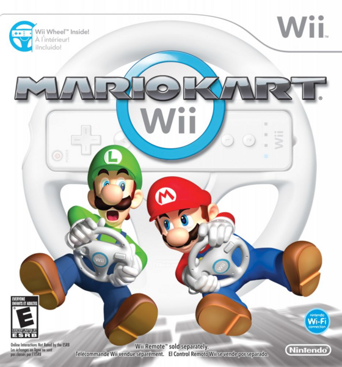

A veces considerados como una subcategoría dentro de los videojuegos de deportes o los de simulación, los videojuegos de carreras o de conducción sitúan al jugador en un recorrido en el que debe llegar a una meta antes que sus contrincantes o dentro de un tiempo límite. Habitualmente el jugador maneja un vehículo a motor, como un coche, aunque existen otras posibilidades. Algunos de estos juegos recrean circuitos de competición existentes en el mundo real, ya sea de Fórmula 1, motociclismo, etc.
El surgimiento del género de carreras se sitúa en la década del 1970, siendo el primero juego Space Race, publicado por Atari en 1973.
Según el nivel de fidelidad a lo que es la conducción en el mundo real, dentro de este género se suelen distinguir dos variantes: arcade y simuladores. Arcade: Mario Kart, Out Run, Crash Team Racing, F-Zero, Need for Speed, Midnight Club, Sonic & Sega All-Stars Racing, Trackmania. Simuladores: Gran Turismo, Project Gotham Racing, rFactor, Forza Motorsport, Toca Touring Car, GTR, Colin McRae Rally, Need for Speed, Real Racing, Project CARS, Race 07.